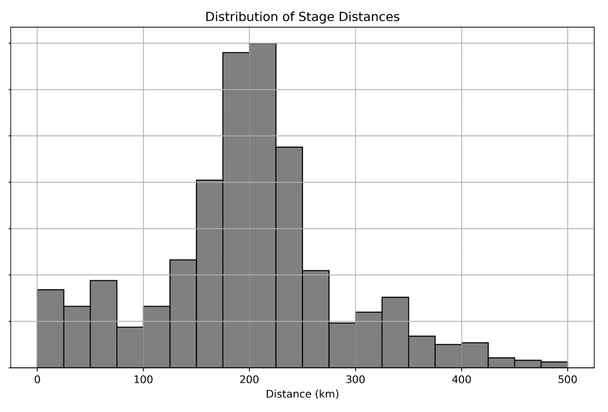

← return to practice.dsc10.com
Instructor(s): Nishant Kheterpal
This exam was administered in-person. The exam was closed-notes, except students were provided a copy of the DSC 10 Reference Sheet. No calculators were allowed. Students had 3 hours to take this exam.
In this exam, you’ll work with a data set representing the results of
the Tour de France, a multi-stage, weeks-long cycling race. The Tour de
France takes place over many days each year, and on each day, the riders
compete in individual races called stages. Each
stage is a standalone race, and the winner of the entire
tour is determined by who performs the best across all of the individual
stages combined. Each row represents one stage of the Tour
(or equivalently, one day of racing). This dataset will be called
stages.
The columns of stages are as follows:
"Stage" (int): The stage number for the respective
year."Date" (str): The day that the stage took place,
formatted as ”YYYY-MM-DD.”"Distance" (float): The distance of the stage in
kilometers."Origin" (str): The name of the city in which the stage
starts."Destination" (str): The name of the city in which the
stage ends."Type" (str): The type of the stage."Winner" (str): The name of the rider who won the
stage"Winner Country" (str): The country from which the
winning rider of the stage is fromThe first few rows of stages are shown below, though
stages has many more rows than pictured.
Throughout this exam, we will refer to stages
repeatedly. Assume that we have already run
import babypandas as bpdand
import numpy as np.
Fill in the blanks so that the expression below evaluates to the proportion of stages won by the country with the most stage wins.
stages.groupby(__(i)__).__(ii)__.get("Type").__(iii)__ / stages.shape[0]The distance of a stage alone does not encapsulate its difficulty, as riders feel more tired as the tour goes on. Because of this, we want to consider “real distance” a measurement of the length of a stage that takes into account how far into the tour the riders are. The “real distance” is calculated with the following process:
Add one to the stage number.
Take the square root of the result of (i).
Multiply the result of (ii) by the raw distance of the stage.
Complete the implementation of the function
real_distance, which takes in stages (a
DataFrame), stage (a string, the name of the column
containing stage numbers), and distance (a string, the name
of the column containing stage distances). real_distance
returns a Series containing all of the “real distances” of the stages,
as calculated above.
def real_distance(stages, stage, distance):
________Solution:
return stages.get(distance) * np.sqrt(stages.get(stage) + 1)
Sometimes, stages are repeated in different editions of the Tour de
France, meaning that there are some pairs of "Origin" and
"Destination" that appear more than once in
stages. Fill in the blanks so that the expression below
evaluates how often the most common "Origin" and
"Destination" pair in the stages DataFrame
appears.
stages.groupby(__(i)__).__(ii)__.sort_values(by = "Date").get("Type").iloc[__(iii)__]Fill in the blanks so that the value of mystery_three is
the "Destination" of the longest stage before Stage 12.
mystery = stages[stages.get(__(i)__) < 12]
mystery_two = mystery.sort_values(by = "Distance", ascending = __(ii)__)
mystery_three = mystery_two.get(__(iii)__).iloc[-1]Suppose we run the following code to simulate the winners of the Tour de France.
evenepoel_wins = 0
vingegaard_wins = 0
pogacar_wins = 0
for i in np.arange(4):
result = np.random.multinomial(1, [0.3, 0.3, 0.4])
if result[0] == 1:
evenepoel_wins = evenepoel_wins + 1
elif result[1] == 1:
vingegaard_wins = vingegaard_wins + 1
elif result[2] == 1:
pogacar_wins = pogacar_wins + 1What is the probability that pogacar_wins is equal to 4
when the code finishes running? Do not simplify your answer.
What is the probability that evenepoel_wins is at least
1 when the code finishes running? Do not simplify your answer.
We want to estimate the mean distance of Tour de France stages by
bootstrapping 10,000 times and constructing a 90% confidence interval
for the mean. In this question, suppose random_stages is a
random sample of size 500 drawn with replacement from
stages. Identify the line numbers with errors in the code
below. In the adjacent box, point out the error by describing the
mistake in less than 10 words or writing a code snippet (correct only
the part you think is wrong). You may or may not need all the spaces
provided below to identify errors.
line 1: means = np.array([])
line 2:
line 3: for i in 10000:
line 4: resample = random_stages.sample(10000)
line 5: resample_mean = resample.get("Distance").mean()
line 6: np.append(means, resample_mean)
line 7:
line 8: left_bound = np.percentile(means, 0)
line 9: right_bound = np.percentile(means, 90)Below is a density histogram representing the distribution of randomly sampled stage distances.

Which statement below correctly describes the relationship between the mean and the median of the sampled stage distances?
The mean is significantly larger than the median.
The mean is significantly smaller than the median.
The mean is approximately equal to the median.
It is impossible to know the relationship between the mean and the median.
Assume there are 100 stages in the random sample that generated this
plot. If there are 5 stages in the bin [275, 300),
approximately how many stages are in the bin
[200, 225)?
Assume the mean distance is 200 km and the standard deviation is 50 km. At least what proportion of stage distances are guaranteed to lie between 0 km and 400 km? Do not simplify your answer.
Solution: Using Chebyshev’s inequality, we know at least 1 - \frac{1}{z^2} of the data lies within z SDs. Here, z = 4 so we know 1 - \frac{1}{16} = \frac{15}{16} of the data lie in that range.
Again, assume the mean stage distance is 200 km and the standard deviation is 50 km. Now, suppose we take a random sample of size 25 from the stage distances, calculate the mean stage distance of this sample, and repeat this process 500 times. What proportion of the means that we calculate will fall between 190 km and 210 km? Do not simplify your answer.
Solution: We know about 68% of values lie within 1 standard deviation of the mean of any normal distribution. The distribution of means of samples of size 25 from this dataset is normally distributed with mean 200km and SD \frac{50}{\sqrt{25}} = 10, so 190km to 210km contains 68% of the values.
Assume the mean distance is 200 km and the standard deviation is 50 km. Suppose we use the Central Limit Theorem to generate a 95% confidence interval for the true mean distance of all Tour de France stages, and get the interval [190\text{ km}, 210\text{ km}]. Which of the following interpretations of this confidence interval are correct?
95% of Tour de France stage distances fall between 190 km and 210 km.
There is a 95% chance that the true mean distance of all Tour de France stages is between 190 km and 210 km.
We are 95% confident that the true mean distance of all Tour de France stages is between 190 km and 210 km.
Our sample is of size 100.
Our sample is of size 25.
If we collected many original samples and constructed many 95% confidence intervals, then exactly 95% of those intervals would contain the true mean distance.
If we collected many original samples and constructed many 95% confidence intervals, then roughly 95% of those intervals would contain the true mean distance.
Suppose we take 500 random samples of size 100 from the stage distances, calculate their means, and draw a histogram of the distribution of these sample means. We label this Histogram A. Then, we take 500 random samples of size 1000 from the stage distances, calculate their means, and draw a histogram of the distribution of these sample means. We label this Histogram B. Fill in the blanks so that the sentence below correctly describes how Histogram B looks in comparison to Histogram A.
“Relative to Histogram A, Histogram B would appear __(i)__ and shifted __(ii)__ due to the __(iii)__ mean and the __(iv)__ standard deviation.”
(i):
thinner
wider
the same width
unknown
(ii):
left
right
not at all
unknown
(iii):
larger
smaller
unchanged
unknown
(iv):
larger
smaller
unchanged
unknown
In this question, suppose random_stages is a random
sample of undetermined size drawn with replacement from
stages. We want to estimate the proportion of stage wins
won by each country.
Suppose we extract the winning countries and store the resulting
Series. Consider the variable winners defined below, which
you may use throughout this question:
winners = random_stages.get("Winner Country")Write a single line of code that evaluates to the proportion of
stages in random_stages won by France (country code
"FRA").
We want to generate a 95% confidence interval for the true proportion
of wins by France in stages by using our random sample
random_stages. How many rows need to be in
random_stages for our confidence interval to have width of
at most 0.03? Recall that the maximum standard deviation for any series
of zeros and ones is 0.5. Do not simplify your answer.
Suppose we now want to test the hypothesis that the true proportion
of stages won by Italy ("ITA") is 0.2 using a confidence interval and the
Central Limit Theorem. We want to conduct our hypothesis test at a
significance level of 0.01. Fill in the blanks to construct the
confidence interval [interval_left, interval_right]. Your
answer must use the Central Limit Theorem, not bootstrapping. Assume an
integer variable sample_size = len(winners) has been
defined, regardless of your answer to part 2.
Hint:
stats.norm.cdf(2.576) - stats.norm.cdf(-2.576) = 0.99 interval_center = __(i)__
mystery = __(ii)__ * np.std(__(iii)__ ) / __(iv)__
interval_left = interval_center - mystery
interval_right = interval_center + mysteryWhat is our null hypothesis?
The true proportion of stages won by Italy is 0.2.
The true proportion of stages won by Italy is not 0.2.
The true proportion of stages won by Italy is greater than 0.2.
The true proportion of stages won by Italy is less than 0.2.
What is our alternative hypothesis?
The true proportion of stages won by Italy is 0.2.
The true proportion of stages won by Italy is not 0.2.
The true proportion of stages won by Italy is greater than 0.2.
The true proportion of stages won by Italy is less than 0.2.
Suppose we calculated the interval [0.195, 0.253] using the above process. Should we reject or fail to reject our null hypothesis?
Reject
Fail to reject
You want to use the data in stages to test the following
hypotheses:
Null Hypothesis: In the Tour de France, the mean distance of flat stages is equal to the mean distance of mountain stages.
Alternative Hypothesis: In the Tour de France, the mean distance of flat stages is less than the mean distance of mountain stages.
For the rest of this problem, assume you have assigned a new column
to stages called class, which categorizes
stages into either flat or mountain
stages.
Which of the following test statistics could be used to test the given hypothesis? Select all that apply.
The mean distance of flat stages divided by the mean distance of mountain stages.
The difference between the mean distance of mountain stages and the mean distance of flat stages.
The absolute difference between the mean distance of flat stages and the mean distance of mountain stages.
One half of the difference between the mean distance of flat stages and the mean distance of mountain stages.
The squared difference between the mean distance of flat stages and the mean distance of mountain stages.
Solution: Option 1, Option 2, and Option 4
A test statistic is a single number we use to test which viewpoint the data better supports. During hypothesis testing, we check whether our observed statistic is a “typical value” in the distribution of the test statistic. The alternative hypothesis indicates “less than” so our test statistic needs to summarize both the magnitude and direction of the difference in the categories.
Assume that for the rest of the question, we will be using the following test statistic: The difference between the mean distance of flat stages and the mean dis- tance of mountain stages.
Fill in the blanks in the code below so that it correctly conducts a hypothesis test of the given hypotheses and returns the p-value.
def hypothesis_test(stages):
means = stages.groupby("class").mean().get("Distance")
observed_stat = means.loc["flat"] - means.loc["mountain"]
simulated_stats = np.array([])
for i in np.arange(10000):
shuffled = stages.assign(shuffled = np.random.__(i)__(stages.get("Distance")))
shuffled_means = shuffled.groupby("class").mean().get("Distance")
simulated_stat = (shuffled_means.loc["flat"] - shuffled_means.loc["mountain"])
simulated_stats = __(ii)__(simulated_stats, simulated_stat)
p_value = np.__(iii)__(simulated_stats <= observed_stat)
return p_valueSolution:
permutationnp.appendmeanThe first step in a permutation test simulation is to shuffle the
labels or the values. So since this first line in the for loop is
assigning a column called ‘shuffled’, we know we need to use
np.random.permutation() on the "Distances"
column. The next line gets the new means for each group after shuffling
the values and simulated_stat is the simulated difference
in means. Now we know we want to save this simulated statistic and we
have the simulated_stats array, so we want to use an
np.append in (ii) to save this statistic in the array.
Finally after the simulation is complete, we calculate the p-value using
the array of simulated statistics. The p-value is the probability of
seeing the observed result under the null hypothesis.
simulated_stats <= observed_stat returns an array of 0’s
and 1’s depending on whether each simulated statistic is less than or
equal to the observed statistic. Now, to get the probability of seeing a
result equal to or less than the observed, we can simply take the mean
of this array since the mean of an array of 0’s and 1’s is equivalent to
the probability.
Indicate whether each of the following code snippets would correctly
calculate simulated_stat inside the for-loop
without errors. Where present, assume the blank (i) has
been filled in correctly.
shuffled = stages.assign(shuffled = np.random.__(i)__(stages.get("Distance")))
shuffled_flat = (shuffled[shuffled.get("class") == "flat"].get("shuffled"))
shuffled_mountain = (shuffled[shuffled.get("class") == "mountain"].get("shuffled"))
simulated_stat = shuffled_flat.mean() - shuffled_mountain.mean()(i):
This code is correct.
This code is incorrect or errors.
shuffled = stages.assign(shuffled = np.random.__(i)__(stages.get("class")))
shuffled_flat = (shuffled[shuffled.get("shuffled") == "flat"].get("Distance"))
shuffled_mountain = (shuffled[shuffled.get("shuffled") == "mountain"].get("Distance"))
simulated_stat = shuffled_flat.mean() - shuffled_mountain.mean()(ii):
This code is correct.
This code is incorrect or errors.
shuffled = stages.assign(shuffled = np.random.__(i)__(stages.get("Distance")))
shuffled_means = shuffled.groupby("class").mean()
simulated_stat = (shuffled_means.get("Distance").iloc["flat"] -
shuffled_means.get("Distance").iloc["mountain"])(iii):
This code is correct.
This code is incorrect or errors.
Solution:
shuffled shuffles the distances.
shuffled_flat gets the series of flats with the shuffled
distances and shuffled_mountain gets the series of the
mountains with the shuffled distances. Finally
simulated_stat calculates the mean difference between the
two categories.shuffled shuffles the labels.
shuffled_flat gets the series of the distances with the
shuffled label of “flat” and shuffled_mountain gets the
series of the distances with the shuffled label of “mountain”. Finally,
simulated_stat calculates the mean difference between the
two categories.shuffled shuffles the distances and assigns these
shuffled distances to the column ‘shuffled’.
shuffled_means groups by the label and calculates the means
for each column. However, simulated_stat takes the original
distance columns when calculating the difference in means rather than
the shuffled distances which is located in the ‘shuffled’
column making this answer incorrect.Assume that the observed statistic for this hypothesis test was equal to -22.5 km. Given that there are 10,000 simulated test statistics generated in the code above, at least how many of those must be equal to -22.5 km in order for us to reject the null hypothesis at an 0.05 significance level?
500
5000
0
9500
10000
Solution: In order to reject the null hypothesis at the 0.05 significance level, the p-value needs to be below 0.05. In order to calculate the p-value, we find the proportion of simulated test statistics that are equal to or less than the observed value. Note the usage of “must be” in the problem. Since these simulated test statistics can be even less than the observed value, none of them have to be equal to the observed value. Thus, the answer is 0.
Assume that the code above generated a p-value of 0.03. In the space below, please write your interpretation of this p-value. Your answer should include more than simply “we reject/fail to reject the null hypothesis.”
Solution: There is a 3% chance, assuming the null hypothesis is true, of seeing an observed difference in means less than or equal to -22.5 km.
The p-value is the probability of seeing the observed value or something more extreme under the null hypothesis. Knowing this, in this context, since the p-value is 0.03, this means that there is a 3% chance under the null hypothesis of seeing an observed difference in means equal to or less than -22.5km.
You are analyzing the data in stages to see which
countries winners come from.
You categorize the countries into four groups: France, Italy, Belgium, and Other. After performing some analysis, you find that the observed distribution of countries of origin for Tour de France stage winners is [0.3, 0.2, 0.1, 0.4]; i.e. 30% of stage winners are French, 20% Italian, etc. Based on census information, the expected population distribution is [0.07, 0.06, 0.01, 0.86]; that is, France’s total population is 7% of the sum of the populations of all countries participating in the Tour, Italy’s is 6%, etc.
You conduct a hypothesis test with the following hypotheses:
Which of the following test statistics are appropriate for this hypothesis test? Select all that apply.
The absolute difference between the expected proportion of French stage winners and the observed proportion of French stage winners.
The sum of the differences between the expected population distribution and the observed distribution of stage winners.
The absolute difference between the number of French stage winners and the number of Italian stage winners.
The sum of the absolute differences between the expected population distribution and the observed distribution of stage winners.
Solution: Option 1 and Option 4
For the rest of this question, assume that we will be using the Total Variation Distance as our test statistic.
Complete the implementation of the simulate and
calculate_test_stat functions so that the code below
successfully simulates 10,000 test statistics.
expected_dist = [0.07, 0.06, 0.01, 0.86]
observed_dist = [0.3, 0.2, 0.1, 0.4]
def simulate(__(i)__):
simulated_winners = np.random.__(ii)__(100, __(iii)__)
return simulated_winners / 100
def calculate_test_stat(__(iv)__, __(v)__):
return __(vi)__
observed_stat = calculate_test_stat(observed_dist, expected_dist)
simulated_stats = np.array([])
for i in np.arange(10000):
simulated_dist = simulate(expected_dist)
simulated_stat = calculate_test_stat(simulated_dist, expected_dist)
simulated_stats = np.append(simulated_stats, simulated_stat)Solution:
expected_distmultinomialexpected_distsimulated_distexpected_dist (or swapped with above)np.abs(simulated dist - expected dist).sum() / 2When performing a simulation, we simulated based on the expectation.
Thus, the argument for the simulate function (i) should be the
expected_dist array. In this function, we simulate winners
based on the expected distribution. So, we want to use
np.random.multinomial in (ii) which will take in the number
of experiments and expected distribution, ie (iii), which is an array of
the probabilities for each of the outcomes.
We are using the total variation distance as the test statistic. The
Total Variation Distance (TVD) of two categorical distributions is the
sum of the absolute differences of their proportions, all divided by 2.
Thus, the arguments of the calculate_test_stat function
should be the simulated_distribution in (iv) and the
expected_distribution in (v) (or swapped). In this
function, we need to return the TVD which can be calculated as follows:
np.abs(simulated dist - expected dist).sum() / 2 in
(vi).
Fill in the blank in the following code so that p_value
evaluates to the correct p-value for this hypothesis test:
p_value = np.mean(simulated_stats ___ observed_statistic)>
=
<
<=
=
Solution: >=
Recall the p-value is the probability of seeing a result equal to or more extreme than the observed value under the null hypothesis. Since the TVD is our test statistic where greater values indicate a result more extreme that means we want to use >= in the blank to check whether the simulated statistic is equal to or more extreme than the observed statistic.
Choose the best tool to answer each of the following questions. Note the following:
What is the median distance of all Tour de France stages?
Hypothesis Testing
Permutation Testing
Bootstrapping
Central Limit Theorem
Solution: Bootstrapping
Since we want the median distance of all the Tour de France stages, we are not testing anything against a hypothesis at all which rules our hypothesis testing and permutation testing. We use bootstrapping to get samples in lieu of a population. Bootstrapping Tour de France distances will give samples of distances from which we can calculate the median of Tour de France stages.
Is the distribution of Tour de France stage types from before 1960 the same as after 1960?
Hypothesis Testing
Permutation Testing
Bootstrapping
Central Limit Theorem
Solution: Permutation Testing
We are comparing whether the distributions before 1960 and after 1960 are different which means we want to do permutation testing which tests whether two samples come from the same population distribution.
Are there an equal number of destinations that start with letters from the first half of the alphabet and destinations that start with letters from the second half of the alphabet?
Hypothesis Testing
Permutation Testing
Bootstrapping
Central Limit Theorem
Solution: Hypothesis Testing
We are testing whether two values (the number of destinations that start with letters from the first half of the alphabet and the destinations that start with letters from the second half of the alphabet) are equal to each other which is an indicator to use a hypothesis test.
Are mountain stages with destinations in France from before 1970 longer than flat stages with destinations in Belgium from after 2000?
Hypothesis Testing
Permutation Testing
Bootstrapping
Central Limit Theorem
Solution: Permutation Testing
We are comparing two distributions (mountain stages with destinations in France from before 1970 and flat stages with destinations in Belgium from after 2000) and seeing if the first distribution is longer than the second. Since we are comparing distributions, we want to perform a permutation test.
Suppose the distance of a Tour de France stage and the time it takes to complete it are linearly associated with correlation coefficient r = \frac{2}{3}. Assume distances have a mean of 200 km and a standard deviation of 80 km. Times have a mean of 6 hours.
Suppose the regression line to predict the time a stage will take (in hours) based on its length (in km) predicts that a 160 km long stage will take 5 hours. What is the standard deviation of the time it takes to complete a stage?
Solution: x_\text{su} = \frac{160 - 200}{80} = -\frac{1}{2}. Then y_\text{su} = -\frac{1}{2} \cdot \frac{2}{3} = -\frac{1}{3} = \frac{5 - 6}{\text{SD}_y}. So \text{SD}_y = 3 hours.
We know that \bar{x} = 200, \sigma_x = 80, r = \frac{2}{3}, and \bar{y} = 6. In this problem we are given x = 160 and y = 5. In order to find the standard deviation of time here, we can start by standardizing our values:
x_{su} = \frac{160-200}{80} = -\frac{1}{2}
Then according to the formula: \text{Predicted} y_{\text{su}} = r \cdot x_{\text{su}}
\text{Predicted} y_{\text{su}} = \frac{2}{3} \cdot -\frac{1}{2} = \frac{1}{3}
Now that we have y in standard units, we can plug it into this formula to solve for the standard deviation of y:
y_{su} = \frac{y - \bar{y}}{\sigma_y}
- \frac{1}{3}= \frac{5-6}{\sigma_y}
\text{SD}_y = 3
Suppose, regardless of your answer to part 1, that stage completion times have a standard deviation of 1.5 hours. The other means, SD, and r are unchanged.
Stages in the middle of the Tour tend to be longer than those at the ends. Stage 14 is 60 km longer than stage 20, so we would expect it to take longer based on our linear association. How large will the difference in our predictions of stage completion times be?
Solution: m = \frac{2}{3} \cdot \frac{1.5}{80} = \frac{1}{80}. Stage 14 is 60 km longer, so we expect it to take \frac{60}{80} = \frac{3}{4} hours longer.
Since we are interested in how much longer stage 14 is than stage 20 based on this linear association, we first want to calculate the slope. Note that r=\frac{2}{3}, \text{SD}_y=1.5, and \text{SD}_x=80:
m = r \cdot \frac{\text{SD}_y}{\text{SD}_x}
m = \frac{2}{3} \cdot \frac{1.5}{80} = \frac{1}{80}
This means that for every additional 1km, time increases by \frac{1}{80}.
Since Stage 14 is 60km longer than Stage 20, we simply multiply our slope by 60, giving \frac{60}{80} = \frac{3}{4}. Thus we expect Stage 14 to take \frac{3}{4} hours longer.
Suppose a mandatory rest break of 30 minutes (0.5 hours) is implemented for all Tour de France stages. How would the slope of the regression line change?
It would decrease.
It would stay the same.
It would increase.
We cannot say for sure.
Solution: It would stay the same.
Adding a 30 minute break to all the stages simply increases each stage’s time by an additional 30 minutes. This would not change the slope since adding time simply shifts the time data points right, but doesn’t change the relationship between distance and time.
Suppose the means and standard deviations above do not change (continue to assume times have a standard deviation of 1.5 hours), but the correlation coefficient r is different. If we predict a 360 km stage will take 9 hours, what is the value of r? Write a single number for r or “N/A” if it is not possible to answer.
Solution: r=1
We can follow a similar process to part 1, but instead solve for r now. First, we calculate x in standard units:
x_{\text{su}} = \frac{x - \bar{x}}{\text{SD}_x}
x_{\text{su}} = \frac{360-200}{80} = \frac{160}{80} = 2
Now find y in standard units:
y_{\text{su}} = \frac{y - \bar{y}}{\text{SD}_y}
y_{\text{su}} = \frac{9-6}{1.5} = \frac{3}{1.5} = 2
Now we can solve for r simply by y_{\text{su}} = r * x_{\text{su}}
2 = r * 2
r=1